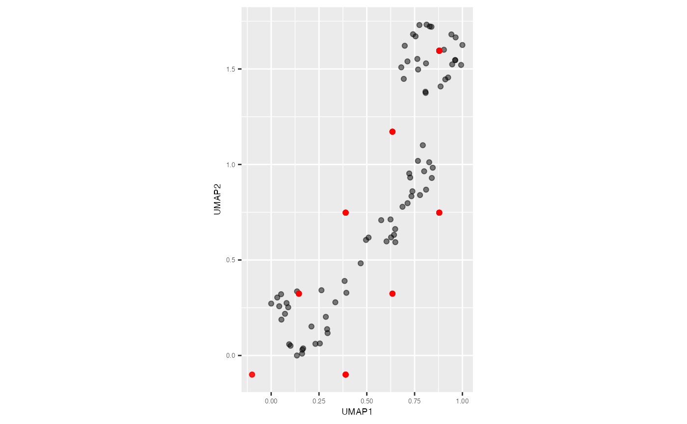
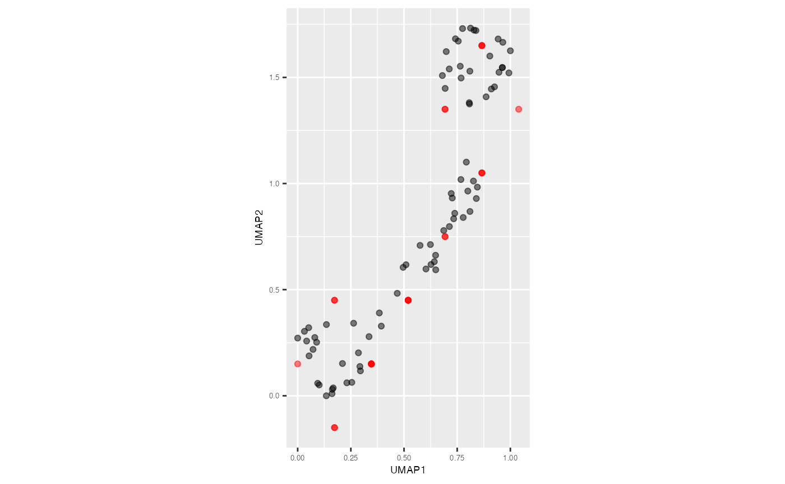

To obtain the model summaries, first you need to obtain the 2D
hexagonal bin centroids which is the 2D model
(df_bin_centroids) and the high-dimensional coordinates of
bin centroids which represents the lifted model in high-dimensions
(df_bin).
model <- fit_highd_model(training_data = s_curve_noise_training, x = "UMAP1",
y = "UMAP2", nldr_df_with_id = s_curve_noise_umap_scaled,
col_start_2d = "UMAP", col_start_highd = "x")
df_bin_centroids <- model$df_bin_centroids
df_bin <- model$df_binLet’s first compute the model summaries for training data. To do that, you need to predict 2D embedding for the training data.
pred_emb_list_training <- predict_emb(test_data = s_curve_noise_training,
df_bin_centroids = df_bin_centroids,
df_bin = df_bin, type_NLDR = "UMAP")
pred_df_training <- as.data.frame(do.call(cbind, pred_emb_list_training))
glimpse(pred_df_training)
#> Rows: 75
#> Columns: 4
#> $ pred_UMAP_1 <dbl> 0.1732051, 0.6928203, 0.8660254, 0.1732051, 0.1732051, 0.8…
#> $ pred_UMAP_2 <dbl> 0.45, 0.75, 1.05, -0.15, 0.45, 1.65, 0.75, 0.75, 0.75, 1.6…
#> $ ID <dbl> 1, 2, 3, 4, 6, 7, 8, 9, 11, 12, 14, 15, 16, 17, 19, 20, 21…
#> $ pred_hb_id <dbl> 12, 18, 24, 2, 12, 34, 18, 18, 18, 34, 18, 12, 29, 6, 18, …
s_curve_noise_umap_scaled |>
ggplot(aes(x = UMAP1,
y = UMAP2,
label = ID))+
geom_point(alpha=0.5) +
geom_point(data = pred_df_training, aes(x = pred_UMAP_1, y = pred_UMAP_2),
color = "red", alpha=0.5) +
coord_equal() +
theme(plot.title = element_text(hjust = 0.5, size = 18, face = "bold"),
axis.text = element_text(size = 5),
axis.title = element_text(size = 7))
Next, you can use the generated 2D embedding to compute model summaries.
gen_summary(test_data = s_curve_noise_training, prediction_df = pred_df_training,
df_bin = df_bin, col_start = "x")
#> $error
#> [1] 63.83385
#>
#> $mse
#> [1] 0.3229922
#>
#> $aic
#> [1] -453.3167The same workflow is followed for the test data as well.
pred_emb_list_test <- predict_emb(test_data = s_curve_noise_test,
df_bin_centroids = df_bin_centroids,
df_bin = df_bin, type_NLDR = "UMAP")
pred_df_test <- as.data.frame(do.call(cbind, pred_emb_list_test))
s_curve_noise_umap_scaled |>
ggplot(aes(x = UMAP1,
y = UMAP2,
label = ID))+
geom_point(alpha=0.5) +
geom_point(data = pred_df_test, aes(x = pred_UMAP_1, y = pred_UMAP_2),
color = "red", alpha=0.5) +
coord_equal() +
theme(plot.title = element_text(hjust = 0.5, size = 18, face = "bold"),
axis.text = element_text(size = 5),
axis.title = element_text(size = 7))
gen_summary(test_data = s_curve_noise_test, prediction_df = pred_df_test,
df_bin = df_bin, col_start = "x")
#> $error
#> [1] 21.83707
#>
#> $mse
#> [1] 0.3458999
#>
#> $aic
#> [1] -45.78101